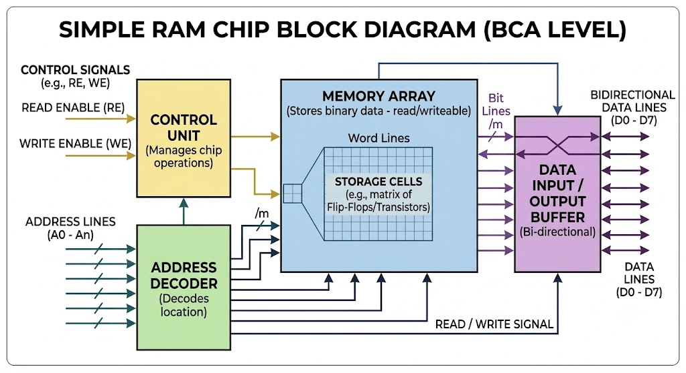

RAM (Random Access Memory) is a primary volatile semiconductor memory utilized in computer systems to temporarily store data, operating system files, and active software applications currently being executed by the CPU. Because RAM features matrix-based addressing, the processor can read from or write to any storage location directly in equal time periods. However, it is volatile, meaning all stored data cells dissipate instantly when electrical power is cut off or a system reboot occurs.
2. Real-Life Analogy & Practical Context 💡
Imagine you are an office worker sitting at a large office desk. The desk represents your RAM. Files and folders that you are working on right now are placed on top of the desk for instant reach. If you need a file from the heavy storage cabinet, you bring it to your desk. But at the end of the day, when you leave the office and clean the desk completely (Power Off), everything on the desk is cleared out.
3 & 4. Interactive 3D Model & Architecture Diagram

Parts: 1. Memory Matrix | 2. Decoders | 3. Data Buffers | 4. Control Pins
🎮 Fun Cartoon Animation & Visualization
Visualize data packets rushing into temporary workspace slots like high-speed active desks!
▶️ [ Interactive Animation Player: RAM Data Traffic Flow ]
8. Multiple Choice Questions (10 MCQs)
✅ Correct: 0❌ Incorrect: 0📊 Percentage: 0%
9. Descriptive Exam Questions & Detailed Answers
Q1 (Short): How does RAM interact directly with the CPU during execution?
Answer: The CPU fetches machine instructions and data directly from RAM using the system bus (Address and Data buses). Because RAM offers nanosecond-level access times, it prevents the processor from stalling, ensuring smooth execution of active software applications.
Q2 (Short): Why is data retention impossible in RAM without a continuous power supply?
Answer: RAM stores data bits using microscopic electronic components (transistors and capacitors). These components rely on an uninterrupted electric current to maintain their charge state. Once power is cut, the charge leaks instantly, causing total data loss.
Q3 (Long - BCA Level): Elaborate on the core characteristics, volatility, and operational significance of RAM in modern computing architecture.
Comprehensive Answer:
1. Definition & Nature: RAM stands for Random Access Memory, serving as the main volatile semiconductor memory.
2. Random Access Capability: Unlike sequential storage devices (like magnetic tapes), RAM allows the CPU to access any storage cell directly via matrix coordinates in equal time intervals.
3. Volatility: It requires continuous electrical power to maintain its state, making it temporary storage.
4. Significance: It acts as the vital bridge between fast processing units and slower permanent storage, directly dictating system multitasking performance.
10. BCA Practical Challenge 🎯
Task: Open your system Task Manager and observe how RAM usage fluctuates when opening heavy software applications!